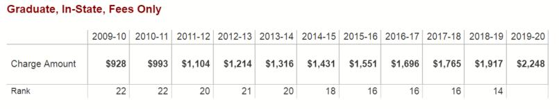

We've got some BIG QUESTIONS about fees...
Why do we pay fees? Why do we need to fund critical infrastructure at Stony Brook?
Stony Brook is not permitted to raise tuition on its own. It is set by the SUNY Chancellor and the state of New York. Fees provide a way for administrators to "raise tuition" and increase revenue independently of SUNY.
By charging fees, administrators force graduate employees to pay for Stony Brook's budgeting mistakes.
How have fees grown over the years?

From 2009 to today, there has been a 142% increase in total fees (Source).
While Stony Brook's factbook conveniently omits the individual fee breakdown, we do have some additional information. The Academic Excellence Fee was first billed in Spring 2012 at $37.50 (Source). By Fall 2019, the fee had risen to $236.25, according to a graduate student who checked their most recent bill on SOLAR. The Academic Excellence Fee alone rose by 530% - and we don't even know what it pays for.
Why do international students pay more fees than domestic students?
The university has a variety of justifications for squeezing more money out of international students. Let's go over those.
International students must pay higher fees than domestic students because the university is required to pay visa fees. Charging international students extra is a way to recoup this cost. So, the university wants to recoup the costs of following the law by passing them on to its students? Boo hoo, I'm a huge state-funded institution and the government makes me pay visa fees...
These fees fund critical infrastructure necessary to accommodate international students on campus. But if this service is so essential, why is it not covered in tuition?
Supposedly, the extra fees support counseling for international studetns adjusting to American life. But doesn't the health fee cover counseling services at CAPS? Hmm...
Bottom line: this fee pays for departments that the University has to have and they are passing the costs on to you.
Cut their salaries!
How many grad students' fees could you pay by cutting an administrator's salary by x dollars? Let's find out.
Administrators are happy to raise graduate student fees (essentially cutting our salaries) to balance the budget. What if they cut their own salaries for a change?